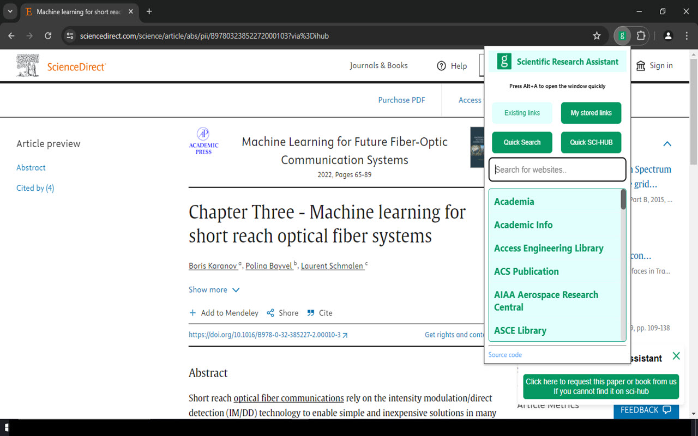
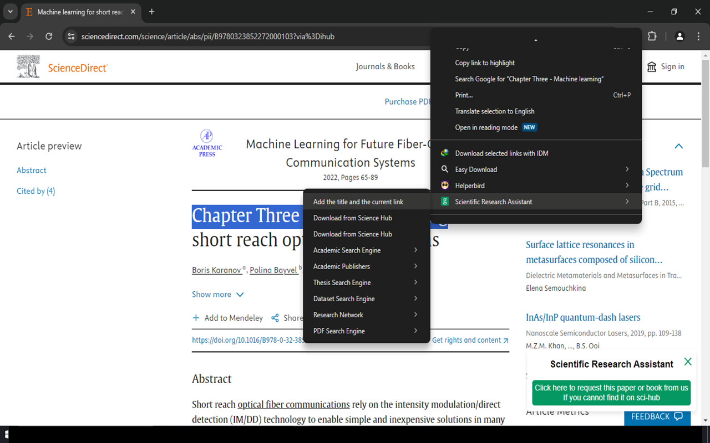
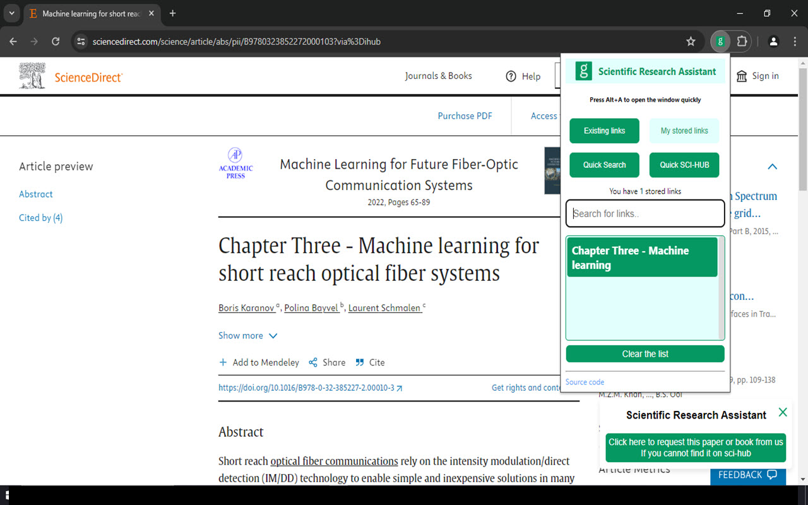
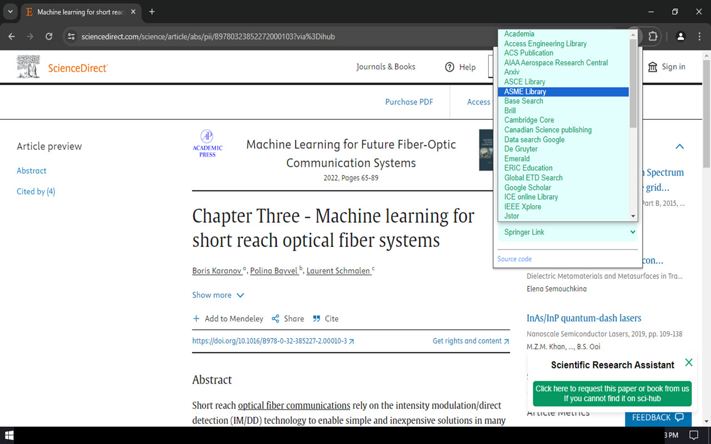
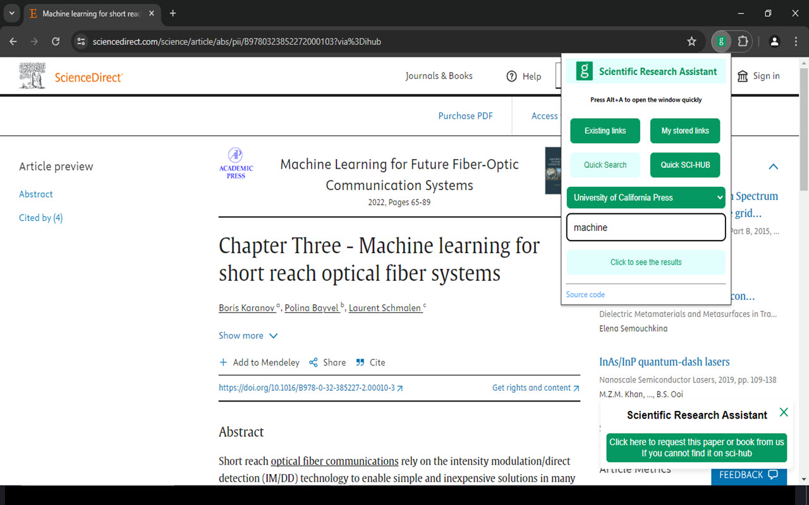
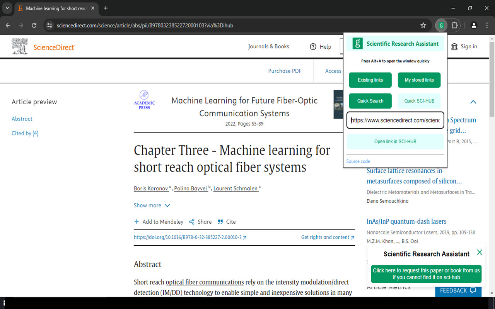
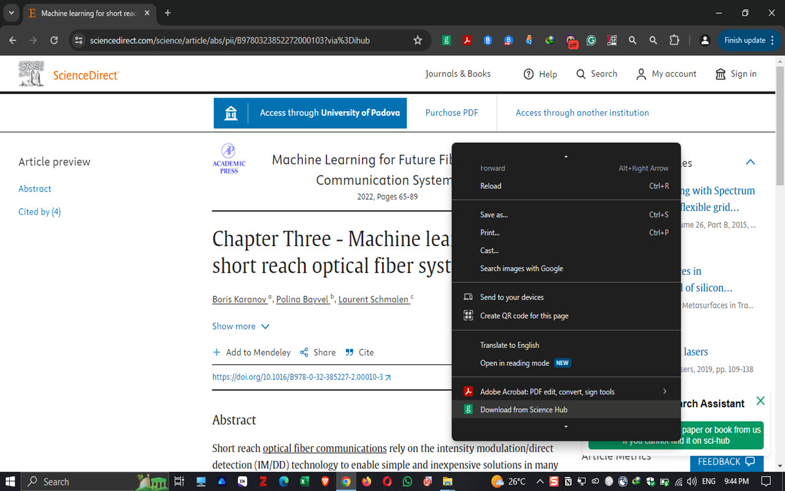
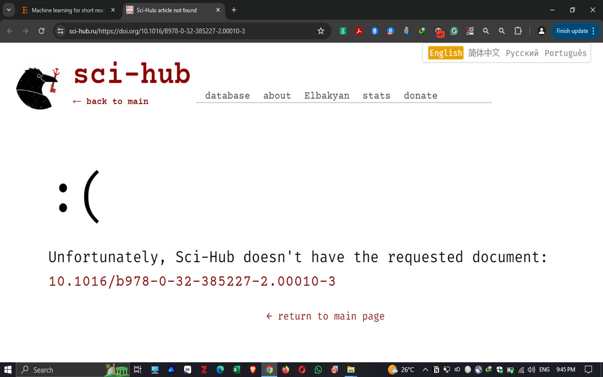
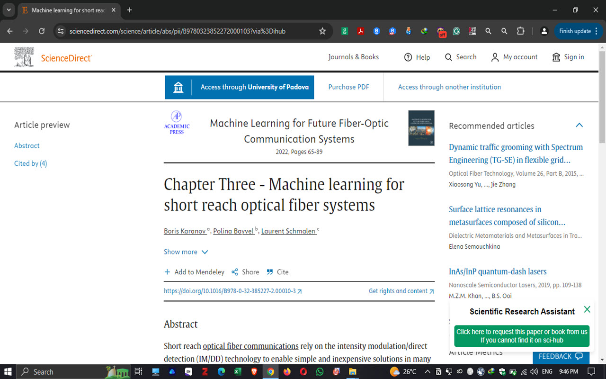
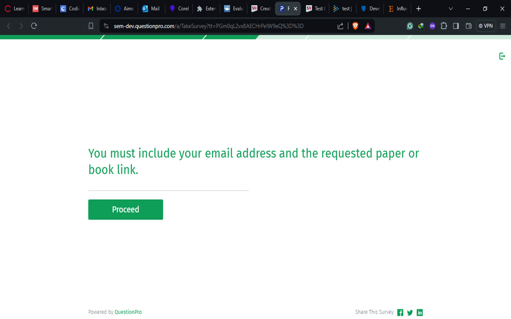

1 / 10

Press Alt and A. then, you can seearch for any website. The website will be opened in the next new tab.
2 / 10

If you want to save a link, you can select any text in the current page and click on "Add the title and the current link"
3 / 10

You can see all the saved link by clicking on "My stored links". You can open a specific link by clicking on it.
4 / 10

You can search for a specific text by entering it in the text field and chose your default website.
5 / 10

You can search for a specific text by entering it in the text field and chose your default website.
6 / 10

Paste any paper's or book's link or DOI and click on "Open link in SCI-HUB" to download it from SCI-HUB.
7 / 10

You can can open SCI-HUB by clicking right and then "Download from Science Hub".
8 / 10

Some papers are not availlable on SCI-HUB. Fellow the next slide to see how you can request it from us.
9 / 10

You can see on the right botton a button "Click here to request". Click on it to open the link where you can reuquest papers or books.
10 / 10

You must click on "Proceed and put your email and the link of the paper. In the worst case, you can get a response within two days.
‹
›